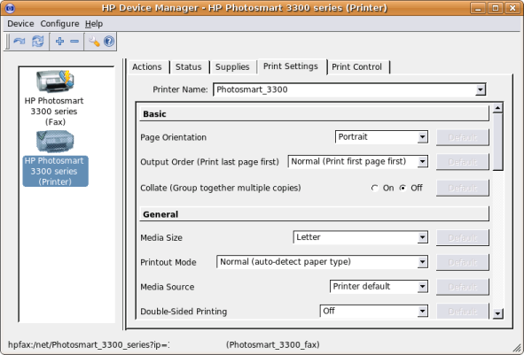

To change the printer's print settings run, hp-toolbox and then click
on "Print Settings". From here you can modify many different
print settings including; print quality, output order, media size,
media source, duplex printing, and more.

Note: It's
recommended that if you plan on printing photos on 3x5 photo paper (for
example) to create a second printer queue "photo tray" using hp-setup
and name the
queue photo tray and then configure the queue to print with the
settings you require. Then you don't need to change the settings
frequently and already have a print queue setup for your task.
Setting up customized print queue's in this fashion is an
effective way to manage printing of special media and other unique
print settings.